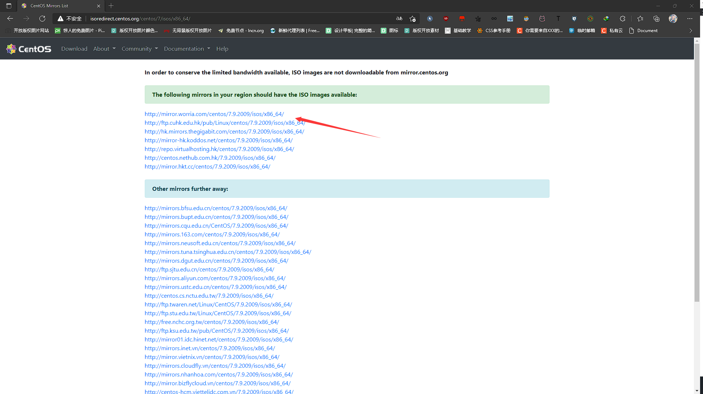
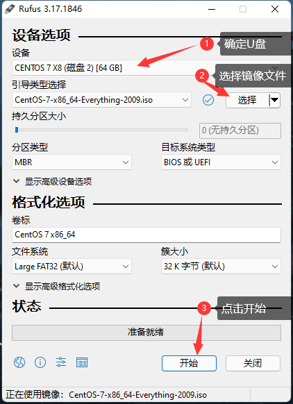

安装Centos7
简介
Centos7是基于Linux内核开发的一个系统，这个系统一般用于做服务器的系统，当然也不排除个人玩家使用的情况，但是在这个windows和mac横行的世界里，个人玩家使用linux的人还是很少的。
如果真的是想要体验linux的桌面版的话个人推荐国产的深度（deepin）和Linux Mint这两个，这两个还是可以的。
注意
站长不看评论，技术性问题在关于页面可以找到站长的联系方式
工具
U盘一个，最好8G以上的
电脑一台
开始
准备工作
下载系统
首先到Centos的官网下载系统，打开官网之后点击Download跳转到下载界面
然后找到自己需要的版本，点击进入下载，我这里下载的是Centos7-X86_64的
点击推荐的镜像站点进行下载

选择自己需要的版本进行下载
下载完成后我们就可以开始吧系统刻录到U盘里面了
刻录U盘
刻录U盘的工具有很多，例如软碟通，Rufus等，我这里使用的是Rufus,这个工具小巧方便易操作，进入Rufus官网下载，点击【下载】下的版本进行下载
打开Rufus，把U盘插入电脑，然后选择刚刚下载的镜像文件，点击【开始】按钮开始刻录

点击开始之后会弹出一个“写入模式选择提示”，直接选择推荐的然后点击【OK】开始写入
等待写入完成之后点击【关闭】按钮然后拔出U盘，这样就刻录完成了，就可以开始安装了
开始安装
确认需要安装Centos的电脑是关机的，然后插入刚刚刻录好的U盘，按开机键启动电脑，同时按键盘上【DEL】键进入电脑的BIOS，每个厂商的电脑进入BIOS的快捷键都不同，一般市【DEL】【F12】【F10】【F2】等，如果不确定自己的电脑的快捷键是什么，可以百度看看。

进入BIOS之后找到【Boot】选项，找到启动方式，把启动方式修改成U盘启动，修改完成后按【F4】保存并重启电脑，这里的保存按钮也不是全部是F4，大部的电脑是F10，具体的可以按【F1】看看帮助

询问是否保存重启，选择【yes】

重启后选择【Install centos7】

选择语言，选择好语言之后点击【继续】

注意看【软件选择】这一项，他默认的市最小安装，最小安装是没有图形化界面的，开机就是命令界面，这里我想要有图形化界面，那么我需要把软件选择改为带GUI的服务器，选择好了之后点击【完成】

然后【安装位置】提示没有选择磁盘，点击进去选择磁盘，一定要区分清楚那个是U盘那个是电脑上的硬盘，选择好硬盘之后可以直接点击【完成】，如果需要自己分区的话则点击下方的【我要配置分区】，如果自己配置分区的话需要配置更目录（/），启动分区（boot），HOME分区（home），交换分区（swap）这里我直接让他自动配置，新手的话也是推荐这个

全部配置好了之后点击右下角的【开始安装】

提示没有设置ROOT密码和没有创建用户，点击ROOT密码开始创建密码，输入两次密码，输入完成后点击【完成】

旁边还有个创建用户，这个可以创建可以不用创建，我这里就不创建了，待会我直接用root用户登录了，然后等待他安装完成就可以了。

安装完成后拔掉U盘然后重启，进行一个简单的配置，这个系统就可以开始使用了
结尾彩蛋

本博客所有文章除特别声明外，均采用 CC BY-SA 4.0 协议 ，转载请注明出处！